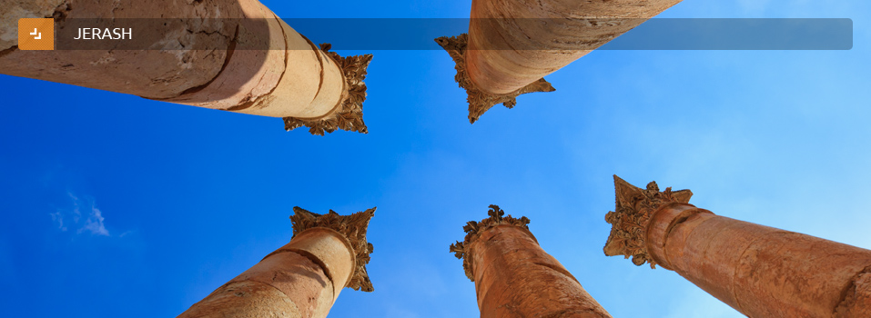
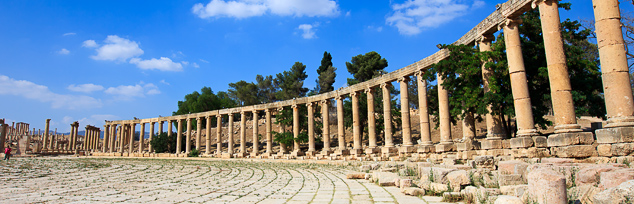

Jerash
A close second to Petra on the list of favourite destinations in Jordan is the ancient city of Jerash, which boasts an unbroken chain of human occupation dating back more than 6,500 years
Jerash lies on a plain surrounded by hilly wooded areas and fertile basins. Conquered by General Pompey in 63 BC, it came under Roman rule and was one of the ten great Roman cities of the Decapolis League.
The city's golden age came under Roman rule, during which time it was known as Gerasa, and the site is now generally acknowledged to be one of the best-preserved Roman provincial towns in the world. Hidden for centuries in sand before being excavated and restored over the past 70 years, Jerash reveals a fine example of the grand, formal provincial Roman urbanism that is found throughout the Middle East, comprising paved and colonnaded streets, soaring hilltop temples, handsome theatres, spacious public squares and plazas, baths, fountains and city walls pierced by towers and gates.

Beneath its external Graeco - Roman veneer, Jerash also preserves a subtle blend of east and west. Its architecture, religion and languages reflect a process by which two powerful cultures meshed and coexisted - The Graeco-Roman world of the Mediterranean basin and the traditions of the Arab Orient.
The modern city of Jerash can be found to the east of the ruins. While the old and new share a city wall, careful preservation and planning has seen the city itself develop well away from the ruins so there is no encroachment on the sites of old.